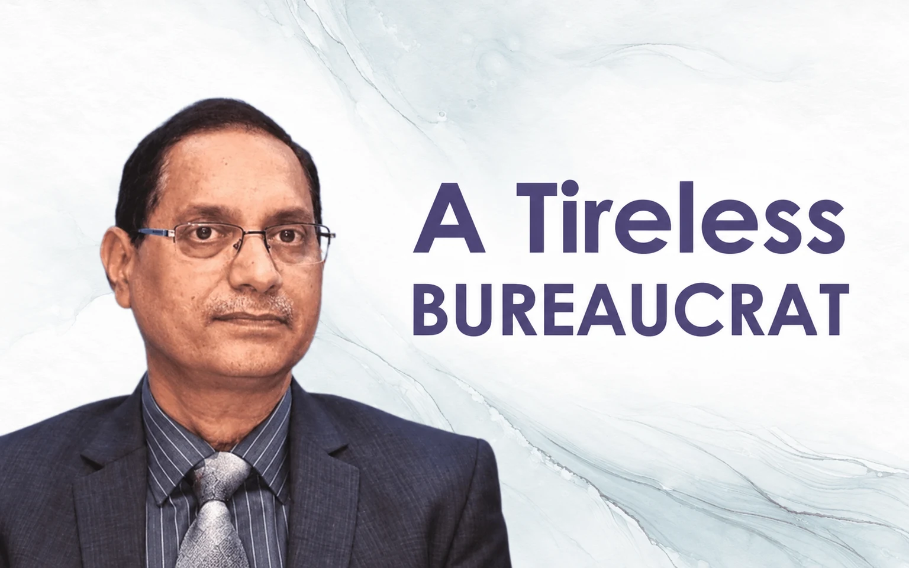

A Tireless Bureaucrat

Tuhin Kanta Pandey who is presently Secretary, Department of Investment and Public Asset Management under Ministry of Finance in Government of India is considered to be one of the very successful and efficient administrators in the present dispensation. His role in strategic disinvestment of some of the central PSUs in the recent times is appreciated in different quarters.
A 1987 batch IAS officer of Odisha cadre, Shri TK Pandey, has a distinguished career both in the State and Central Government holding many key positions before getting the present assignment.
He was the Collector of undivided Sambalpur district, Transport Commissioner, Commissioner of Commercial Taxes, Special Secretary, GA Department, Secretary, Health and Family Welfare, and Finance Secretary.
In Government of India he served in erstwhile Planning Commission and Cabinet Secretariat. He is admired as an honest, upright and decisive administrator and at the personal level he is considered to be a very polite and affectionate person.
While he was serving as the Secretary, Health and Family Welfare and initiated some reforms suddenly he got transferred and posted as Commissioner of Commercial Taxes by the State Government. He was apparently not happy with the posting as was being discussed then in the state administration. However, he joined after a few days.
Being a workhorse he started doing his job most sincerely and efficiently. He didn’t go for frequent field visits like his predecessors and confined himself in his office. He was a reformist and as such he tried to amend the archaic provisions in the Acts and Rules to fit into the requirements of the time.
Many of his suggestions were in fact accepted by the government and were acted upon. Few of them were turned down on different grounds. I was then looking after the subject in the Finance Department and some of my colleagues in his office attributed it to me. He was misguided by them and thought that I was responsible for turning down his proposals.
Later when one of his successors went to meet him in Delhi he confided it to him and ultimately it reached me. I had no occasion to remove the misgivings from his mind and I took it in my own stride. Some of his successors also had carried the same perception and I was unfortunately at the receiving end. In government witch-hunting is a common phenomenon and I never bothered for such things.
After his central deputation was over he came back again to Odisha in 2016 and took over as the Finance Secretary. I was then in the Planning and Coordination Department after my elevation to IAS. There was a meeting of the newly constituted NITI Aayog at Kolkata to discuss certain critical issues affecting states.
Due to his past experience in Planning Commission he was deputed to attend it and I accompanied him to the said meeting. The deliberations in the meeting were quite fruitful and we came back satisfied. Since I was looking after the budget exercise in the P & C Department we used to have regular interactions.
Later on, I was moved to GA Department looking after the AIS establishment and then his promotion was due. There were some hurdles in the process and finally he got promoted to ACS rank. The same evening I personally handed over the promotion order to him. He was visibly very happy and thanked me for this.
Subsequently, by a twist of events I was posted in the Finance Department while he was continuing as ACS, Finance. Then I came to work under him directly. When I reported him for my joining he expressed his anguish over the ordeal I faced for no serious lapses on my part and advised me to forget it. He was then quite well disposed towards me and wanted to assign me some important branches.
But a few of my colleagues whom I had brought to the Finance Department and groomed over the years got panicked. They manipulated me to get it changed even at the stage of office order being issued and the Secretary had to take the excuse letter that my services were very much required for the State Finance Commission for which he didn’t want me to get saddled with other work.
I knew the entire drama was conducted by these crooks behind my back but kept quiet with the explanation of the Secretary. For the rest of the period till Shri Pandey left the Department for central deputation in 2019 I had a cordial relationship with him.
Leave a thought
No account needed. Your name and comment appear publicly after approval.